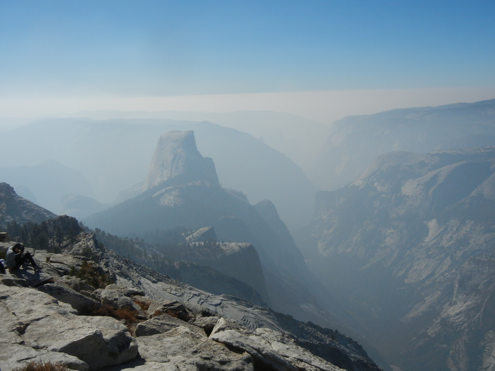

Even on his second day on skis, my son was a good skier. He loved even his first day, and he was a natural. He begged to go all of the time. So finally he and I, and another dad and his son, went up to Tahoe for skiing.
For parents with little kids, the ski protocol is to put the kids into a two-hour lesson in the morning and then ski like crazy, so that you're so tired and sore and exhausted after those two hours that it's a treat to ski with the little beginners for the afternoon.
We were skiing at Sugarbowl. At Sugarbowl, the easy runs are easy, the intermediate runs are easy, the advanced runs are easy, and the expert runs are very, very hard. I'd never skied with the other dad before. We were grownups, not teenagers, so we did the unspoken figure-out-how-good-the-other-guy-is routine very gently. A few swapped stories about previous ski disasters, check out the other guy's clothing, etc. Nothing major.
We finally got the kids settled into class, got our equipment together, and headed up the lift for the first run of the day. We picked a nice steep but over-groomed intermediate run to warm up on. I started down, skied for a few hundred yards, stopped, and saw the other guy WAY BACK up the hill. Ok, so I'm a much better skier--no harm there, we'll have fun for two hours, pick up the boys, and hit the flat stuff so they can learn.
After an hour we had skied every single run at Sugarbowl. I told the other guy I'd try a run or two in the trees and sync up with him before the kids expired. I headed down through the trees down to the "Danger--Experts" area and started looking around. "Hmm, Cliff Area here." The snow coverage is pretty thin. Let me traverse over a bit further. Oh, another Cliff Area. Ok, I'll just ski down over there and see how things look. Here the "Cliff Area" signs were replaced by a sign a bit more descriptive:
Danger: Extreme Skiing Only Beyond This Point
Use Extreme Caution
It was a chute, a steep funnel of snow narrowing at the bottom to an opening about three feet wide. In the middle of the opening was a large tree. Below the opening, and the tree, was a twenty foot drop straight down. Onto a pile of bare rocks. On either side of me were steep icy cliffs.
My mind really locked up. I was sure I was going to die. This must be the way down intended by the ski resort--after all, there's a sign here. But there was no way I could survive this. "Well, if I start down as slowly as I can go, and then shove to the side at the bottom, I may be able to miss the tree. But I won't be headed straight when I jump off the cliff. And as y'all know, only cats can turn in midair. And even if I were headed straight, which I won't be, there's not much to be done when I reach the rocks." I kept on turning the problem over in my head, and started to panic a little bit. "I have to get the boys in half an hour! I have to do something! But I really think I'm going to die here." Finally I looked to the left and rights sides--no good, those big icy cliffs.
But then a spark of genius! I got here somehow, and I'm not dead yet! I can just go back the way I came! Two hundred yards straight up a steep slippery sheet of snow and ice?!? Well, it beats certain death. So I popped my skis off, grabbed the two skis in one hand and the two ski poles in the other, and started climbing.
It took probably a half an hour. Exhausting--sufficiently exhausting at high altitude that my vision kept on blacking out. But every foot higher I climbed through the snow and ice was one foot further away I was from that tree--and that cliff--and those rocks.
I have no idea why it didn't occur to me for ten minutes to climb up.

Half Dome as seen from Cloud's Rest, October 2020